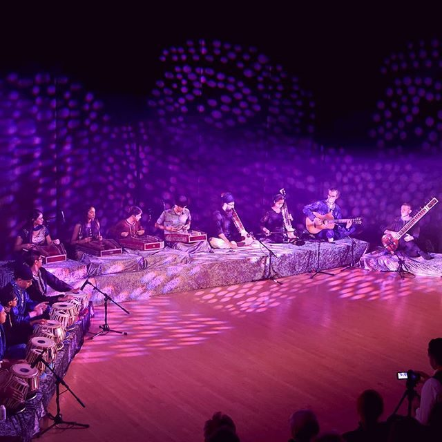
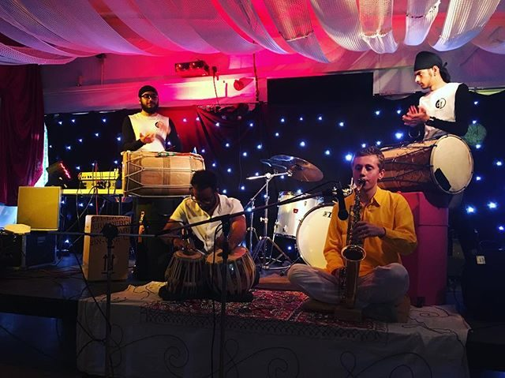

Barcelona | United Kingdom
Jazz & Indian Classical Music
Saxophone · Sitar · Composition
About
Joe Luca is a UK-born musician and composer, most well-known for his jazz and Indian classical inspired style of playing saxophone. Now based between Spain and the United Kingdom, he is available for performances around Europe and beyond.
As a saxophonist and sitarist, Joe brings together two very different sonic languages into a musical voice that is entirely his own. Whether navigating the long melodic lines of a raga or exploring the harmonic possibilities of post-bop jazz, the quality of listening — and of response — remains constant.
A graduate of Leeds Conservatoire, Joe continues to perform and compose for a range of projects spanning Jazz, Indian Classical, Electronic, and Pop music.
Leeds Conservatoire · 2020
Music
Compositions
A selection of original compositions and arrangements — the influences from which they were drawn, and the thinking behind them.
I would like to thank Steve Fishwick and Matt Anderson for their invaluable guidance with these compositions, which were the basis of my Final Year Composition Project at Leeds Conservatoire.
I originally wrote this piece for quartet, with the melody played on alto saxophone. I later added a second line on trumpet, but switched the parts over to give the melody to the trumpet, as the brighter timbre of the instrument cuts through clearer. As is typical for compositions within this style, Ipixuna do Pará starts with a vamp, which complements the Brazilian feel of my composition. A vamp is a short passage, which is simple in rhythm and harmony, played in preparation for the entry of a soloist; it is usually repeated ad libitum until the soloist is ready. I have drawn influence for the vamp in my composition, as it is a feature that has long been present in Brazilian jazz, and it continues to be used in contemporary writing.
Contrafacts are a key part of the jazz repertoire. The late saxophonist Lee Konitz is strongly associated with the contrafact — a musical work based on an earlier composition. I have been drawn to Konitz’s work since hearing him perform in 2018, and wanted to explore for myself some of these concepts that I witnessed that evening. Konitz once said about Charlie Parker, “No one really studied with Bird directly, but they all tried to play exactly like him”, and although Tristano was known for his extended, rhythmically complex eighth-note lines, these were not derivative of the bebop as such, but it was an influence nonetheless. In the same sense, I wanted to take existing music and make my own music from this. However, I didn’t want to simply imitate the sounds — to do this would, in the words of Marian Jago, “constitute failure on a number of levels according to the approach of this lineal tradition”. Joe’s Nose takes influence from the Lennie Tristano approach of creating a contrafact, in the style of Lennie’s Pennies.
I wanted to compose a piece that conveyed the style of jazz that was being composed around the mid-late 1960s. In order to create this composition, I first researched and analysed a number of compositions by Wayne Shorter, a leading composer of the time whose techniques stretched the boundaries of standard jazz repertoire, as established by the “Great American Songbook”. Many of Shorter’s compositions feature introductions that consist of a repetition of a pair of semitonally adjacent chords. In Initiation to Green, I have drawn inspiration from Shorter’s use of harmony, which is more variable than in most jazz and popular tunes. Examples of these successive chord sequences can be found in a number of his compositions, such as Deluge (1964) and Speak No Evil (1966).
This composition is a jazz ballad, written in a similar style to existing standards such as Body and Soul, and My One and Only Love. Its title comes from the Spanish word for heaven because, to quote Michelle Obama, “Heaven, as I envisioned it, had to be a place full of jazz”.
As an alto saxophonist, I chose to write this composition for an alto saxophone-led quartet. In contrast to my other compositions, I wanted to write a slower composition that didn’t rely on the drum part to carry the momentum of the tune. For this reason, the composition relies on the forward motion of the phrases played by the melodic instruments — including the piano and double bass — to maintain the progression. In order to use the piano as a melodic instrument, I have written right-hand phrases into the score, and left deliberate space for the pianist to improvise responding phrases ad lib. The double bass plays a particularly active part throughout, responding to the sparse piano phrases in the introduction and playing counterpoint melody lines to the alto saxophone throughout the head. The drums are given plenty of freedom to improvise phrases over this ballad, to add a more atmospheric feel — an approach inspired by Sebastian Rochford, particularly his work on Trio Libero.
This is an original composition of mine, arranged for a nine-piece ensemble. I created this work for a university module on Big Band arranging, which taught me a great deal about composing for nonets.
I wrote this big band arrangement for a second year assignment at Leeds Conservatoire, drawing from Amy Winehouse’s melodic phrasing of this Isham Jones standard.
Live


No shows currently scheduled.
Check back soon — or get in touch for bookings.
Acknowledgements
My music education has been an eclectic mix of tutors and others. All of the following people have helped me love music and become the performer I am.
Thank you all — Joe Luca
Contact
For bookings, collaborations, press enquiries, or just to say hello — I’d love to hear from you.
Loading…